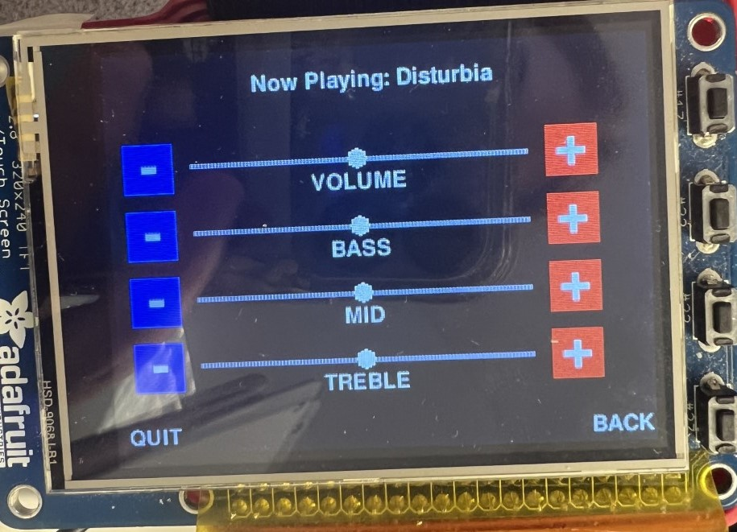

This drawing below shows the schematic for the main and peripheral hardware:

As shown, the Raspberry Pi communicates with the external Digital to Analog Converter chip, so all the audio processing occurs in the digital domain. The DAC directly outputs to an audio jack connector, which then is connected to a set of speakers.
Because the ultimate goal of this project is to manipulate the audio to hear different frequency ranges at different volumes, much of the audio processing occurs in the frequency domain. The .wav files, however, that are loaded into the Python program, hold their information in the time domain, so the audio processing first applies an FFT on a fixed number of samples, manipulates the audio in the frequency domain, then applies an inverse FFT to achieve back the audio in the time domain so that it can be outputted to the DAC. The audio is processed in accordance with the GUI in the piTFT that chooses the amplitudes of each frequency bucket.
The GUI shown above is composed of bards that represent the master volume and the volumes that correspond to the specific frequency ranges to be controlled. The buttons on either side of the bars will increase or decrease the volumes indicated, and the point on the bar will shift corresponding to that button press. The thread that runs the GUI and the thread that processes and outputs the audio run in independent threads such that the time requirements of the audio output is met and the sound can be cohesive at the correct frequency. The GUI communicates its information to the processing thread in order to provide the sound level scalars required in the audio processing.
Through this project, I gained experience in implementing simple mechanisms in audio processing using Python. I also learned different ways the numpy module can be used to acheive a variety of mathematical computations. Additionally, becuaes of the timing requirements with resepct to the frequency of the audio, I was able to practice code optimization and discover different ways in which the language can be leveraged in order to acheive faster code.
For an in-depth report on this project, please visit the project page on Joe Skovira's ECE 5725 course website!